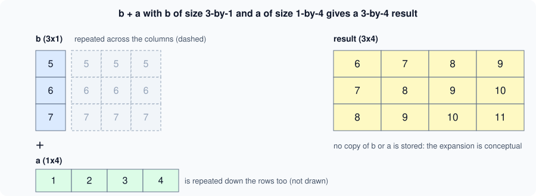

Implicit Expansion and Compatible Sizes
|
This content was generated with the assistance of AI and should be verified against the official documentation before being relied on in production. |
Written against MATLAB R2026b. The sessions below were run in GNU Octave 11.3.0 (MATLAB code that Octave also accepts), where the same idea is called broadcasting; the output is Octave’s and the error messages differ from MATLAB’s. Where MATLAB’s text is given it is labelled "not run here".
When an element-wise operation receives arrays of different sizes, MATLAB does not give up: if the sizes are compatible it conceptually stretches the smaller dimensions to match, then carries out the operation. This is implicit expansion. It is why A - mean(A) works, why a scalar can be added to a matrix and why a column plus a row is a table. It was introduced in R2016b (the documentation of bsxfun says "in MATLAB R2016b and later" the operators expand implicitly). The array model is on Matrices and Arrays; the operators it applies to are on Operators and Precedence.
The compatible-size rule
Two inputs have compatible sizes if, for every dimension, the lengths are the same or one of them is 1. Every array has trailing dimensions of size 1, so a 3-by-4 matrix is also 3-by-4-by-1-by-1. The result has, in each dimension, the larger of the two lengths (a length-1 dimension is stretched to the other).
| Size of A | Size of B | Compatible? | Result size |
|---|---|---|---|
3-by-4 |
3-by-4 |
yes, same size |
3-by-4 |
3-by-4 |
1-by-1 (a scalar) |
yes |
3-by-4 |
3-by-4 |
3-by-1 (a column) |
yes |
3-by-4 |
3-by-4 |
1-by-4 (a row) |
yes |
3-by-4 |
3-by-1 |
1-by-4 |
yes, column against row |
3-by-4 |
3-by-4-by-2 |
3-by-4 |
yes (B has a trailing dimension of 1) |
3-by-4-by-2 |
3-by-1-by-2 |
1-by-4 |
yes |
3-by-4-by-2 |
1-by-0 |
3-by-1 |
yes (zero pairs with 1) |
3-by-0 |
3-by-2 |
4-by-2 |
no, 3 and 4 differ and neither is 1 |
error |
1-by-3 |
1-by-4 |
no, two non-scalar rows of different length |
error |
The same rule holds for empty arrays: a dimension of size zero pairs with a dimension of size 1 or 0, and the result has size zero there.
size(zeros(1,0) + zeros(3,1))
size(ones(3,4,2) + ones(3,4))
size(ones(3,1,2) + ones(1,4))Octave 11.3.0 output:
ans =
3 0
ans =
3 4 2
ans =
3 4 2Which operators and functions support it
Most element-wise binary operators and functions: the arithmetic operators +, -, .*, ./, .\, .^; the relational operators ==, ~=, <, <=, >, >=; the element-wise logical operators &, | and xor; and many two-input functions such as max, min, mod, rem, atan2, hypot and the bit operations. Matrix operations (*, /, \, ^) do not expand: they apply the rules of linear algebra, so [1 2 3] * [1 2 3] is an error rather than an element-wise product. The reference page of each function says whether its inputs "support implicit expansion"; the page lists the operators together with the compatible-sizes topic.
Examples
Subtract a vector from a matrix. Centre each column of a matrix on its mean: mean(A) is a 1-by-n row, so A - mean(A) subtracts each column’s mean from that column.
A = magic(3); C = mean(A)
A - COctave 11.3.0 output:
C =
5 5 5
ans =
3 -4 1
-2 0 2
-1 4 -3Source: MATLAB documentation: mean, MATLAB documentation: Compatible Array Sizes for Basic Operations
A column plus a row. The sum of every row-vector element with every column-vector element, which is the same table that bsxfun(@plus,a,b) produced before R2016b:
a = [1 2 3 4]; b = [5;6;7];
b + aOctave 11.3.0 output:
ans =
6 7 8 9
7 8 9 10
8 9 10 11
The figure is an original schematic, not a MathWorks figure. No expanded copy is stored; MATLAB computes the result without building the intermediate arrays.
The heatflow distance-from-centre grid without meshgrid
For the plate of the heatflow scenario (nx = 5 columns, ny = 4 rows, spacing dx = 1), the distance of each grid point from a source at (x0, y0) = (2, 1.5) is built from a row of x coordinates and a column of y coordinates. Their difference from the centre has compatible sizes, so there is no need to build the two full coordinate matrices:
nx = 5; ny = 4; dx = 1;
xg = (0:nx-1)*dx; % 1-by-nx row
yg = (0:ny-1)'; % ny-by-1 column
r = sqrt((xg - 2).^2 + (yg - 1.5).^2)
[X,Y] = meshgrid(xg,yg);
isequal(r, sqrt((X-2).^2+(Y-1.5).^2))Octave 11.3.0 output:
r =
2.5000 1.8028 1.5000 1.8028 2.5000
2.0616 1.1180 0.5000 1.1180 2.0616
2.0616 1.1180 0.5000 1.1180 2.0616
2.5000 1.8028 1.5000 1.8028 2.5000
ans = 1(xg - 2) is a 1-by-5 row, (yg - 1.5) is a 4-by-1 column, and their squares add to the 4-by-5 matrix r. meshgrid(xg,yg) returns the same two coordinate matrices explicitly, and the last line shows that using them gives the identical answer. Implicit expansion avoids storing two extra full matrices and is the form used by the implicit-expansion version of the heatflow helper functions (see Vectorization and Preallocation). ndgrid is the same idea with the first dimension as the first output; use it when you work with N-D grids.
The older forms: bsxfun and repmat
Before R2016b, arrays of different sizes had to be made the same size by hand. bsxfun(@plus, a, b) applied a function with singleton expansion, and repmat(row, m, 1) built the stretched copy before the operation. Both are still supported and give the same results, but implicit expansion is shorter and faster, because repmat allocates the stretched array. The books written for older releases show repmat/bsxfun for every row-minus-mean operation; in new code use plain operators.
bsxfun(@plus, a, b) % same as b + a
repmat(a, 3, 1) + repmat(b, 1, 4) % the same, with explicit copiesbsxfun still has a use when you must support releases before R2016b, and for a function handle that is not one of the supported operators.
Errors: incompatible sizes
If any dimension differs and neither length is 1, the operation fails. MATLAB reports Arrays have incompatible sizes for this operation. with the identifier MATLAB:sizeDimensionsMustMatch (not run here); for a matrix operation it may instead say Matrix dimensions must agree. (MATLAB:dimagree, not run here). Octave 11.3.0 prints its own text:
try, [1 2 3] + [1 2 3 4], catch err, disp(err.message), end
try, ones(3,2) + ones(4,2), catch err, disp(err.message), endoperator +: nonconformant arguments (op1 is 1x3, op2 is 1x4)
operator +: nonconformant arguments (op1 is 3x2, op2 is 4x2)Accidental expansion
Because compatible sizes expand silently, a mistaken orientation produces a result instead of an error. The classic case is subtracting two vectors of the same length where one is a row and the other a column:
x = 1:3; y = (1:3)';
x - yOctave 11.3.0 output (a 3-by-3 matrix, not a 1-by-3 difference):
ans =
0 1 2
-1 0 1
-2 -1 0The same happens in sum((y_model - y_data).^2) when one comes from a function that returns a column and the other from a file that is a row: the sum of squared errors is then of an n-by-n matrix, and the answer is wrong without any warning. Protect your code: make the orientation an invariant (store samples as columns), use x(:) to force a column, check size on function entry, and validate arguments with arguments blocks (see Argument Validation). Another form is A == b with a vector b, which compares each row or column with b instead of testing equality of A and b.
Pitfalls
-
Row minus column gives a matrix; check orientations.
-
Matrix operators do not expand:
*is the product,.*expands. -
An unintentional scalar (a 1-by-1 result) pairs with anything.
-
Memory: the result of an expansion is a full array, so a 100000-by-1 column plus a 1-by-100000 row needs 10^10 elements; the compatible-size rule makes huge results easy to create by mistake.
-
Code that relies on expansion does not run on releases before R2016b.
Where older books differ
Books for MATLAB 7 present bsxfun and repmat as the way to combine arrays of different sizes, with repmat(mean(A), size(A,1), 1) before every subtraction of column means. Since R2016b the plain operators do the work and the old forms are legacy (the Primer by Davis was written for R2010a and predates it).